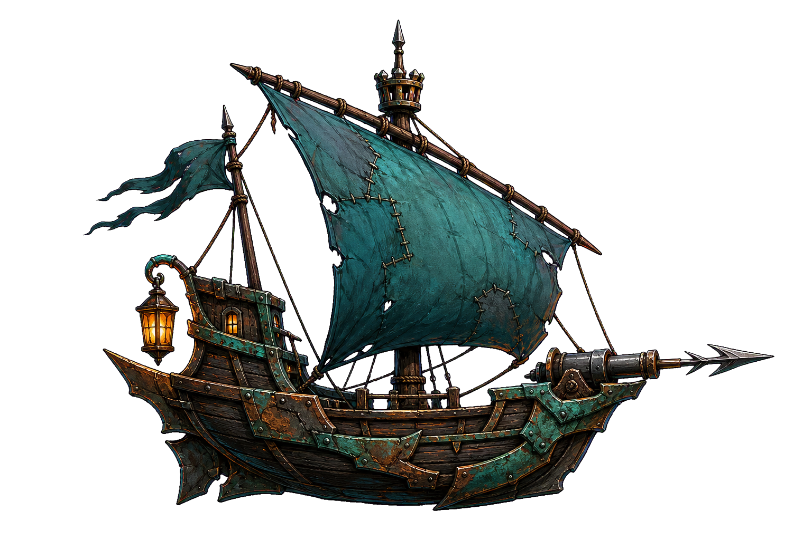

原创航海卡牌爬塔试玩版
潮痕航路
观察敌船意图，选择卡牌，再指定攻击或防御目标。
攻击牌
点卡牌 → 点敌船
防御牌
点卡牌 → 点自己的船
开始航行
放弃存档并重新启航
手机请横屏游玩 · 航程会自动保存
◒
潮痕航路
THE WAKEBOUND ROUTE · v0.10.2
♥
72 / 72
◈
90
等级
1
·
0 / 50
航程
1 / 8
牌组
10
硬件
0
药剂
0 / 3
⚙ 设置
声音 开
重新启航
暴风航线 · 第一海域
选择下一站
点击发光节点进入战斗
⚓ 船坞需从航线进入
▦ 航海牌典

你的回合
第 1 回合
逐潮者
遗港的最后领航员
72 / 72
护甲 0
3
潮力
结束回合
敌人将行动
航程奖励
选择一张卡牌
它将加入你的牌组。
跳过奖励
逐潮者号 · 船长舱
航行设置
×
游戏设置
画面设置
音频设置
操作设置
↻
请横屏游玩
旋转手机后，战场和手牌会完整显示